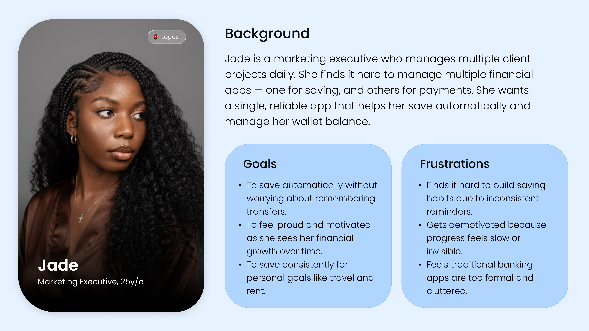
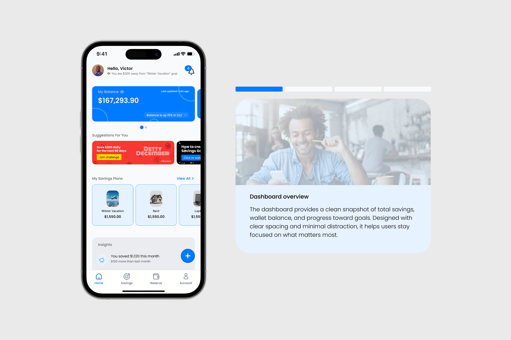
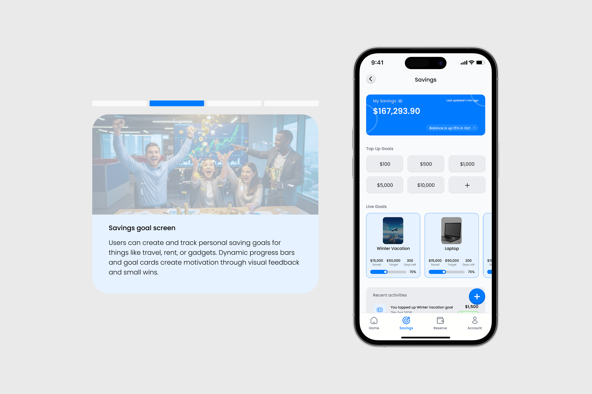
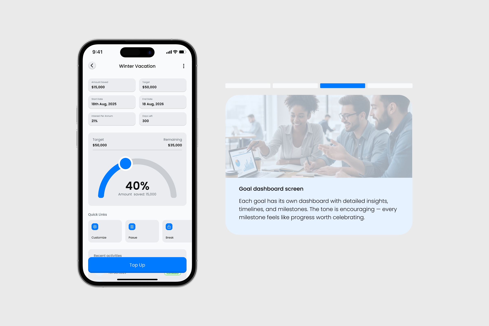
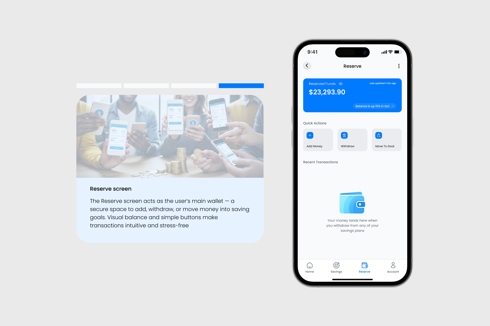

Mapping
I mapped how money moves from income to spending and saving. I broke this into stages — receive, allocate, track, adjust — and used this to define what each screen needed to support without overloading the user.

img/work/sprout.png — 1200×800 minimum.
Sprout is a mobile savings app designed to help young professionals manage money with more structure and clarity. I focused on people who earn regularly but struggle to stay consistent with saving. The product combines goal-based saving with a wallet system, allowing users to organise funds, track progress, and understand spending without relying on multiple tools.

img/work/sprout-persona.png — 2400×1350
minimum. Export the persona board from Figma.
A working professional receives their salary, pays a few bills, then spends the rest without a clear plan. Saving is treated as an afterthought. They move money between apps, forget to set anything aside, and lose track of what remains. Over time, they feel stuck — not because they earn too little, but because their money lacks structure, visibility, and intention at the point decisions are made.
I designed Sprout to make saving a primary action, not a leftover. Users create goals first, then allocate money through a wallet system that separates spending and savings. Progress is always visible, and actions are reduced to a few clear steps. I chose to limit flexibility in favour of structure, which means users cannot freely move money without intention, trading control for consistency and better saving behaviour.
I mapped how money moves from income to spending and saving. I broke this into stages — receive, allocate, track, adjust — and used this to define what each screen needed to support without overloading the user.
I explored different ways to organise money inside the app. I tested separating wallet and goals versus merging them. I settled on a split system so users could clearly distinguish available funds from committed savings.
I designed the core flows for creating goals, funding them, and withdrawing money. Each flow was reduced to a small number of steps, removing optional paths that created hesitation or slowed decisions.
I designed high-fidelity screens focusing on hierarchy and readability. I prioritised balance, spacing, and clear labels over decorative elements. Some earlier visual ideas were removed when they distracted from understanding money at a glance.

img/work/sprout-1.png — 1200×800
minimum.

img/work/sprout-2.png — 1200×800
minimum.

img/work/sprout-3.png — 1200×800
minimum.

img/work/sprout-4.png — 1200×800
minimum.
I initially tried to make the app flexible, allowing users to move money freely. This made the experience harder to understand and reduced commitment to saving. This project shifted my approach — I now prioritise structure over freedom when behaviour change is the goal, even if it limits user control.